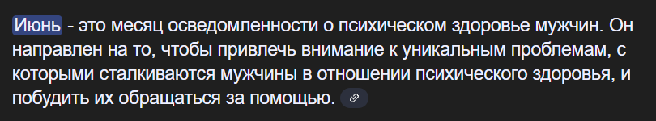
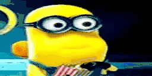
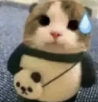
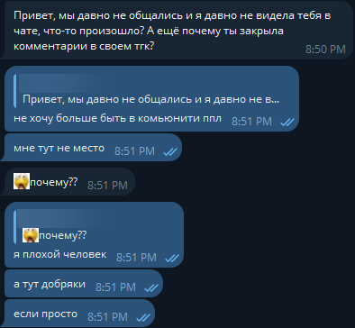
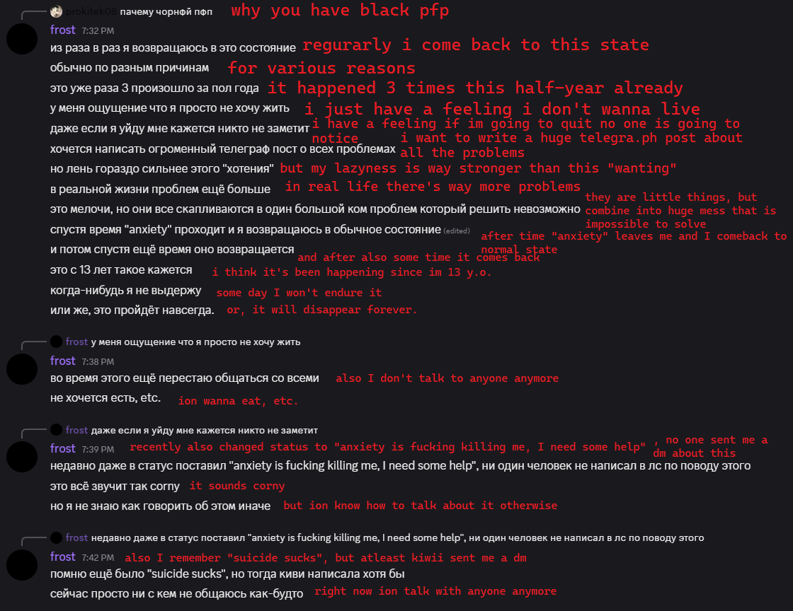

"у меня много всего накопилось"
frostxoff | 06.14.25 21:11 GMT+3
*представьте тут счётчик просмотров*
В этом посте хочу написать о том, что происходило со мной последние 4 месяца (c февраля) и почему постов в тгк не было до июня (а ведь кому-то не пофиг)
WARNING: suicidal thoughts & suicide discussion

*Иронично, как этот пост выходит посреди июня, но в связи с последними событиями 13 июня хочется выпустить его пораньше, чтобы помочь кому-то хоть как-то (как-будто я на что-то влияю лол)*
Перед "главами" хочу сказать то, что биологически я парень (удивлён как об этом не догадались (вот это плот-твист )), и я уже давно не использую женские местоимения (если вы внимательно просмотрите каждый пост с февраля не увидите ни одного местоимения). По началу это была просто шутка когда меня мисгендернули на начале сезона ппл, но она давно переросла уже не в шутку  Если вам некомфортно использовать мужские местоимения на мне, не надо. Мне совершенно пофек на местоимения, но делаю этот абзац чтобы не было вопросов к одному скрину (и в принципе ко всему посту).
1 | Уход с PPL и архивирование ТГК

12 февраля в ТГК @frostxgg закрываются комменты, удаляются реакции и описание меняется на "канал будет архивирован", потому что я хочу полностью отвязаться от комьюнити ппл.
Дело в том, что у меня тогда было ощущение что все меня ненавидят на ппл, типо я захожу и меня сразу хуесосят.
И как раз в тот день на стриме невоса меня замутили на день за то, что я кинул сонг с банвордом и не просил даже его включать. Очевидно, что кидать такое лучше не надо, но это не было даже кинуто с интентом навредить (мне просто понравился сонг после первого прослушивания, конечно после этого у меня этот сонг ассоциировался только с плохим и я его удалил из библиотеки).
До этого ещё была похожая ситуация на стриме, поэтому и было ощущение, что это таргетированный хейт, поэтому и захотелось уйти с ппл и отойти подальше от комьюнити, раз уж меня тут ненавидят.
Обид ни на кого не держу! И тем более у меня не было желания самоубиться от какого-то майнкрафт стримерка. И ещё, простите за блоки и аниксть прости за удаление переписки тг!! (мне до сих пор жаль то, что я сделал это, но хотя бы сохранился дамп)

*PTL Staff Chat*
Есть текст на английском т.к. это отправлялось не только в русские комьюнити
Я думаю то, что мне не надо ничего объяснять на этом скриншоте, всё и так ясно.
К счастью, "когда-нибудь я не выдержу" не произошло, и я до сих пор живу. И ещё это было месяц назад, сейчас всё уже хорошо.
(думаю если бы моя квартира была на этажах повыше меня бы уже не было, я уже выживал падение с 5 этажки)
Этот пост ни в коем случае не пропаганда суицида или причинения вреда себе, если вам плохо обратитесь к психологической помощи по телефону, или лучше к родным/друзьям, или ещё лучше к личному психологу.
На фоне недавнего случая пятницы 13 июня хочу сказать, что я понимаю Водасоду, возможно наши случаи совершенно разные, но есть что-то общее
« Проблемы в жизни, немного надавили. »
- https://t.me/vodsod/884
очевидно что "немного", это сильное приуменьшение, и даже если нет, то тогда "немного" надавившие проблемы не могут быть причиной столь ужасного действия. Лично у меня появился огромный ком проблем, который невозможно было решить, но если его размотать всё становится гораздо менее страшно и проще, однако были и проблемы которые проходят только со временем, например смерть бабушки. Очевидно, что переживания магическим образом нельзя было исправить и это прошло только со временем.
Как я говорил в одном из недавних ТГК постов то, что я не знаю Водасоду лично. Возможно у него просто не было близкого человека, или же он был интровертом, как и я. У меня тоже не было желания выплёскивать все свои проблемы на кого-то, чтобы мне стало проще, а он жалел меня (т.к. дампер тг Kal стикеры отображаются только при нажатии). Также вполне возможно (и скорее всего правда) то, что я несу полный бред, и на самом деле это было психическое заболевание (или же обе версии, во втором случае лучше обращаться к психотерапевту).
3 | Текущее положение, aftermath.
Эмоции от вчерашнего дня до сих пор остались, меня трясёт от того, что это произошло в ту же ночь как и я думал спрыгнуть с балкона, хорошо что меня удержало осознание того, что у меня есть мама, которая обо мне беспокоится, и это было бы ужасно, если бы меня не стало в почти тот же месяц как и не стало её мамы (моей бабушки).
Сейчас всё хорошо, остались некоторые проблемы, но если не считать их, всё идеально. Экзамены сданы, менталка стала лучше, возможно даже вернусь на ппл, если всё будет также хорошо. (пока что могу сказать то, что точно пойду на эксперименты 2025)
Помните, что после всего плохого идёт хорошее. После зимы - лето, после ночи - день. (так и наоборот, будьте готовы к этому!)
И ещё не обращайте внимание на некоторых блядей из комментариев поста соды и тгк чп самары, такие люди всегда будут и лучшее что можно сделать - это заблокировать их, или просто игнорировать.
Хочу сказать отдельное большое (ОГРОМЕННОЕ) спасибо аниксти за то, что она есть и помогает мне выбраться из этого!!!!!!! (кошшк буквально вытаскивает меня из ямы 🙄)
любящий человек сделает всё, чтоб тебе было хорошо - Anixty
Coldposts by @frostxoff